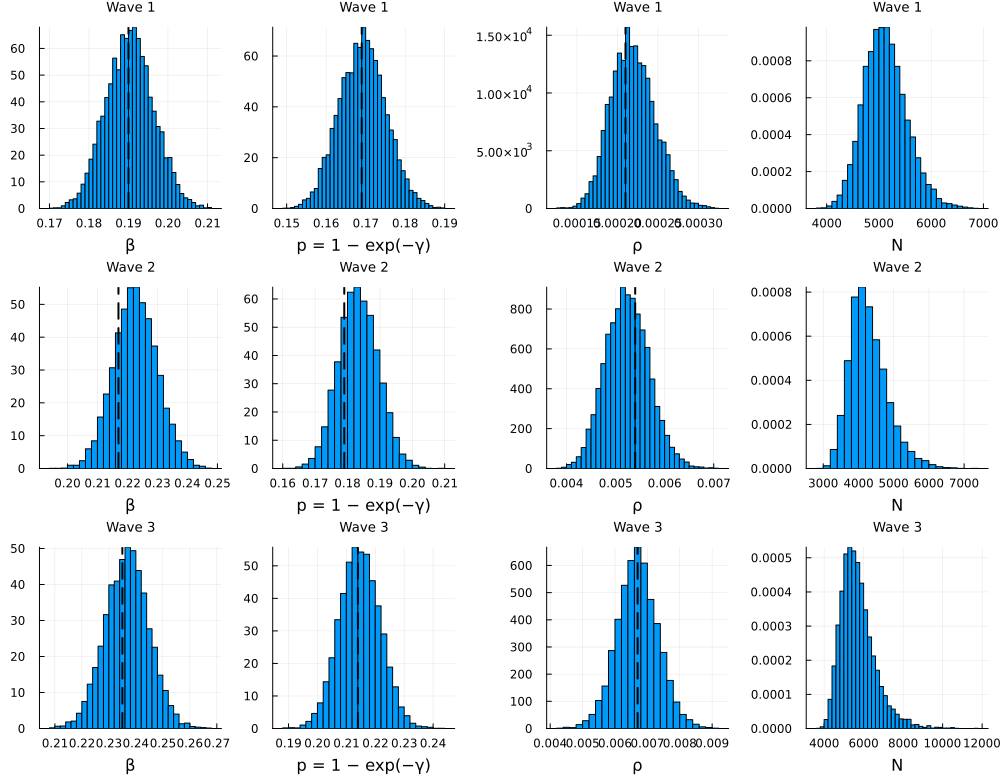
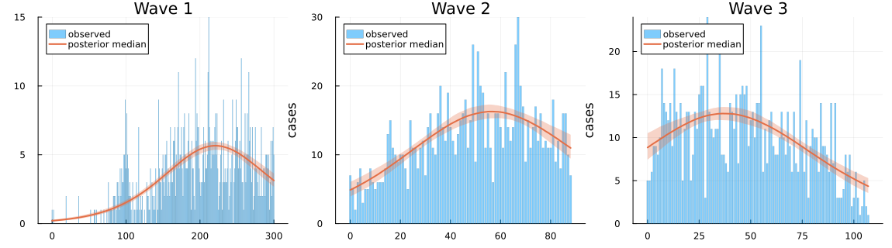
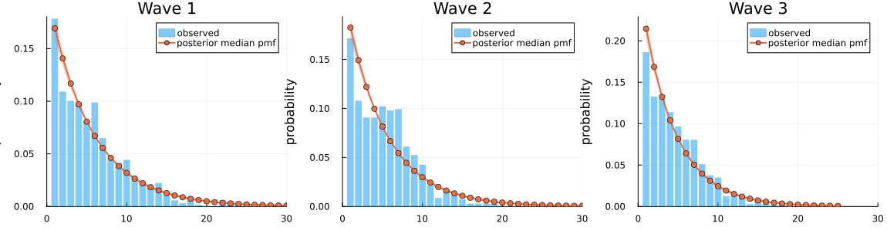

Ebola virus disease in the DRC (2018–2020)
The output on this page was precomputed using the manuscript's MCMC settings and is displayed without being re-evaluated. To rerun it, see Reproducibility.
This vignette fits the three waves of the 2018–2020 Ebola virus disease (EVD) epidemic in the Democratic Republic of the Congo, as in the manuscript. The same data were analysed with continuous-time DSA by Vossler et al. (2022), whose estimates are the point of comparison.
The question. For each wave, what are the transmission rate β, the removal rate γ, the initially infected fraction ρ and the size N of the population at risk, when case records are incomplete?
The data and the likelihood. Each record has a symptom-onset time, a hospitalisation time (treated as removal), or both. Each kind of record contributes its own likelihood terms:
| Record | Terms |
|---|---|
| complete (onset and hospitalisation) | onset histogram (Multinomial) + recovery interval (Geometric) + final size |
| onset only | onset histogram + final size |
| hospitalisation only | convolution over the unknown onset + final size |
For a hospitalisation-only case removed on day T, the convolution term sums over the possible onset days, log Σ_{u=1}^{T−1} f_u P(W = T − u), where f_u is the map's probability of an onset on day u and W is the infectious period. All K cases count in the final size K ~ Binomial(N, τ), where τ is the expected fraction infected over the observation window, and N is summed out over a uniform prior on K, …, K + 19,999.
using DiscreteDynamicSurvivalAnalysis
using CSV, DataFrames, Distributions, Turing, Random, Statistics
using Plots, StatsPlots
const FULL = get(ENV, "DDSA_FULL", "false") == "true"
const WAVES = FULL ? (1, 2, 3) : (2,)Inputs
Each wave's CSV has the columns onset and hosp (days since the first case) and the flags event1/event2 marking an observed onset/hospitalisation. When a flag is 0 the corresponding column repeats the other time, so it is set to missing before binning. linelist then bins onsets by calendar day (the grid ends on the day of the last onset), takes the rounded onset-to-hospitalisation interval of complete records, and sends hospitalisation-only records to the convolution term.
function load_wave(w)
df = CSV.read(example_data_path(Symbol("ebola_wave$w")), DataFrame)
onset = ifelse.(df.event1 .== 1, df.onset, missing)
hosp = ifelse.(df.event2 .== 1, df.hosp, missing)
return linelist(onset, hosp)
end
waves = Dict(w => load_wave(w) for w in 1:3)
DataFrame(wave = 1:3, end_of_data = ["27 Feb 2019", "27 May 2019", "12 Sep 2019"],
records = [waves[w].final_size for w in 1:3],
complete = [length(waves[w].recovery_intervals) for w in 1:3],
onset_only = [sum(waves[w].infection_counts) - length(waves[w].recovery_intervals) for w in 1:3],
hosp_only = [length(waves[w].removal_only_steps) for w in 1:3],
days = [waves[w].nsteps for w in 1:3])| Row | wave | end_of_data | records | complete | onset_only | hosp_only | days |
|---|---|---|---|---|---|---|---|
| Int64 | String | Int64 | Int64 | Int64 | Int64 | Int64 | |
| 1 | 1 | 27 Feb 2019 | 907 | 679 | 222 | 6 | 301 |
| 2 | 2 | 27 May 2019 | 1104 | 706 | 392 | 6 | 89 |
| 3 | 3 | 12 Sep 2019 | 1069 | 747 | 321 | 1 | 108 |
Model configuration
The priors are β ~ Uniform(0.01, 1), γ ~ Uniform(0.01, 1) (per day; the per-day removal probability is p = 1 − exp(−γ)) and ρ ~ Beta(1, 500). The infectious period is geometric (1-indexed), the discrete analogue of the exponential period of continuous-time DSA. The numerical guards clamp τ to [1e-6, 1 − 1e-6] and floor f at 1e-10.
ebola_spec(data) = DDSAModel(infectious_period = GeometricIP(parameter = :γ),
priors = (β = Uniform(0.01, 1.0), γ = Uniform(0.01, 1.0), ρ = Beta(1.0, 500.0)),
population = data.final_size:(data.final_size + 19_999),
guards = NumericalGuards(τ_bounds = (1e-6, 1 - 1e-6), f_floor = 1e-10))Fit
The manuscript ran 4 chains of 2,000 draws after 1,000 NUTS adaptation steps (default_sampler) for each wave. The chains start from jittered data-based values (data_based_inits: p from the mean recovery interval, β at R0 = 1, ρ at its prior median).
ndraws, sampler = FULL ? (2000, default_sampler()) : (1000, NUTS(500, 0.8; max_depth = 12, Δ_max = 1000.0))
fits = Dict{Int,Any}()
seconds = Dict{Int,Float64}()
for w in WAVES
seconds[w] = @elapsed fits[w] = fit_ddsa(Xoshiro(20261006), ebola_spec(waves[w]), waves[w];
ndraws = ndraws, nchains = 4, sampler = sampler)
end
fits[last(WAVES)]DDSAFit(GeometricIP, 4 chains × 2000 draws, parameters: β, γ, ρ, N)Results
Posterior summaries of Wave 3. The derived quantities are p, R0 = β / p (the reproduction number of the discrete-time map), the mean infectious period mean_ip_steps = 1/p days and the attack rate K_over_N = K / N.
function summary_table(f; sigdigits = 4)
df = DataFrame(posterior_summary(f))
for c in names(df)[2:end]
df[!, c] = round.(df[!, c]; sigdigits = sigdigits)
end
return df
end
summary_table(fits[last(WAVES)])| Row | parameter | mean | std | q2_5 | q50 | q97_5 | ess | rhat |
|---|---|---|---|---|---|---|---|---|
| Symbol | Float64 | Float64 | Float64 | Float64 | Float64 | Float64 | Float64 | |
| 1 | β | 0.2367 | 0.008102 | 0.2209 | 0.2368 | 0.2526 | 2810.0 | 1.001 |
| 2 | γ | 0.2417 | 0.008916 | 0.2247 | 0.2415 | 0.2592 | 2710.0 | 1.001 |
| 3 | ρ | 0.006698 | 0.0006341 | 0.005463 | 0.00669 | 0.007972 | 3034.0 | 1.001 |
| 4 | r | 1.0 | 0.0 | 1.0 | 1.0 | 1.0 | NaN | NaN |
| 5 | N | 5708.0 | 879.0 | 4414.0 | 5571.0 | 7869.0 | 4070.0 | 1.0 |
| 6 | K_over_N | 0.1913 | 0.02692 | 0.1358 | 0.1919 | 0.2422 | 4070.0 | 1.0 |
| 7 | τ | 0.1913 | 0.02635 | 0.1362 | 0.1919 | 0.2401 | 3963.0 | 1.0 |
| 8 | p | 0.2147 | 0.007 | 0.2012 | 0.2146 | 0.2283 | 2710.0 | 1.001 |
| 9 | mean_ip | 4.663 | 0.1523 | 4.38 | 4.661 | 4.969 | 2710.0 | 1.001 |
| 10 | mean_ip_steps | 4.663 | 0.1523 | 4.38 | 4.661 | 4.969 | 2710.0 | 1.001 |
| 11 | R0 | 1.103 | 0.0198 | 1.063 | 1.103 | 1.141 | 4321.0 | 1.001 |
The implied number of initial infectives I0 = ρ N (posterior median and 95% interval) for each fitted wave:
i0(w) = (d = posterior_draws(fits[w]); quantile(d.ρ .* d.N, [0.5, 0.025, 0.975]))
DataFrame(wave = collect(WAVES), I0_median = [round(i0(w)[1]; digits = 2) for w in WAVES],
I0_lower = [round(i0(w)[2]; digits = 2) for w in WAVES], I0_upper = [round(i0(w)[3]; digits = 2) for w in WAVES])| Row | wave | I0_median | I0_lower | I0_upper |
|---|---|---|---|---|
| Int64 | Float64 | Float64 | Float64 | |
| 1 | 1 | 1.12 | 0.79 | 1.54 |
| 2 | 2 | 22.24 | 17.47 | 28.6 |
| 3 | 3 | 37.58 | 30.34 | 46.76 |
Comparison with Vossler et al. (2022). Their continuous-time removal rate γ is compared with DDSA's p, their β/γ with R0 and their 1/γ with the mean infectious period.
const VOSSLER = Dict(1 => (β = 0.190, γ = 0.169, ρ = 0.00021, R0 = 1.124, ip = 5.9),
2 => (β = 0.217, γ = 0.179, ρ = 0.0054, R0 = 1.214, ip = 5.6),
3 => (β = 0.235, γ = 0.214, ρ = 0.0067, R0 = 1.098, ip = 4.7))
fmt(x) = (q = quantile(x, [0.5, 0.025, 0.975]); "$(round(q[1]; sigdigits = 3)) [$(round(q[2]; sigdigits = 3)), $(round(q[3]; sigdigits = 3))]")
rows = map(Iterators.product((:β, :p, :ρ, :R0, :mean_ip_steps), WAVES)) do (q, w)
d = posterior_draws(fits[w])
v = VOSSLER[w]
ref = q === :β ? v.β : q === :p ? v.γ : q === :ρ ? v.ρ : q === :R0 ? v.R0 : v.ip
(wave = w, DDSA = string(q), median_95 = fmt(getproperty(d, q)),
Vossler_quantity = q === :p ? "γ" : q === :R0 ? "β/γ" : q === :mean_ip_steps ? "1/γ" : string(q),
Vossler_2022 = ref)
end
DataFrame(vec(rows))| Row | wave | DDSA | median_95 | Vossler_quantity | Vossler_2022 |
|---|---|---|---|---|---|
| Int64 | String | String | String | Float64 | |
| 1 | 1 | β | 0.19 [0.179, 0.202] | β | 0.19 |
| 2 | 1 | p | 0.169 [0.158, 0.181] | γ | 0.169 |
| 3 | 1 | ρ | 0.000218 [0.00017, 0.000275] | ρ | 0.00021 |
| 4 | 1 | R0 | 1.12 [1.11, 1.14] | β/γ | 1.124 |
| 5 | 1 | mean_ip_steps | 5.91 [5.53, 6.33] | 1/γ | 5.9 |
| 6 | 2 | β | 0.223 [0.209, 0.237] | β | 0.217 |
| 7 | 2 | p | 0.183 [0.172, 0.195] | γ | 0.179 |
| 8 | 2 | ρ | 0.00523 [0.00442, 0.00614] | ρ | 0.0054 |
| 9 | 2 | R0 | 1.21 [1.17, 1.26] | β/γ | 1.214 |
| 10 | 2 | mean_ip_steps | 5.46 [5.12, 5.82] | 1/γ | 5.6 |
| 11 | 3 | β | 0.237 [0.221, 0.253] | β | 0.235 |
| 12 | 3 | p | 0.215 [0.201, 0.228] | γ | 0.214 |
| 13 | 3 | ρ | 0.00669 [0.00546, 0.00797] | ρ | 0.0067 |
| 14 | 3 | R0 | 1.1 [1.06, 1.14] | β/γ | 1.098 |
| 15 | 3 | mean_ip_steps | 4.66 [4.38, 4.97] | 1/γ | 4.7 |
The manuscript's estimates were close to Vossler et al. for every wave, e.g. Wave 2: β = 0.222 (0.208–0.236), γ = 0.202 (0.188–0.217), i.e. p = 0.183 (0.171–0.195), and R0 = 1.215 (1.169–1.261).
Posterior densities, with Vossler et al.'s estimates (dashed):
panels = Any[]
for w in WAVES
d = posterior_draws(fits[w])
v = VOSSLER[w]
for (x, ref, lab) in ((d.β, v.β, "β"), (d.p, v.γ, "p = 1 − exp(−γ)"), (d.ρ, v.ρ, "ρ"), (d.N, nothing, "N"))
p = histogram(x; normalize = :pdf, bins = 40, label = "", xlabel = lab, title = "Wave $w", titlefontsize = 9)
ref === nothing || vline!(p, [ref]; label = "", color = :black, linestyle = :dash, linewidth = 2)
push!(panels, p)
end
end
plot(panels...; layout = (length(WAVES), 4), size = (1000, 260 * length(WAVES)))
Posterior predictive checks
f at the posterior draws, scaled to the number of cases with a known onset (scale :observed_total), against the onset histogram: the manuscript's epidemic-curve figure (one panel per wave).
ppc_plots = map(WAVES) do w
pp = posterior_predictive(Xoshiro(1234 + w), fits[w]; ndraws = 500, scale = :observed_total)
plot(pp; title = "Wave $w", xlabel = "days since first case", ylabel = "cases", legend = :topleft)
end
plot(ppc_plots...; layout = (1, length(WAVES)), size = (350 * length(WAVES) + 100, 320))
The fitted geometric infectious period against the recorded onset-to-hospitalisation intervals of the complete records:
rp_plots = [plot(recovery_predictive(fits[w]; ndraws = 500); title = "Wave $w", xlims = (0, 30)) for w in WAVES]
plot(rp_plots...; layout = (1, length(WAVES)), size = (350 * length(WAVES) + 100, 300))
Substituting your own data or model
- Data. Pass onset and removal times to
linelist, withmissingfor the unobserved ones: complete records give recovery intervals, onset-only records enter the onset histogram, and removal-only records enter the convolution term (:removal_only). Records with both times missing are rejected, so drop them (or count them in the final size by building theLineListdirectly with a largerfinal_size). - Population.
population = K:(K + 19_999)puts a uniform prior onN. Use an integer for a known population, or anNGridfor another prior. - Infectious period.
GeometricIP(parameter = :γ)matches continuous-time DSA. For a more peaked period useNegBinGLCT(1:10)(with a prior onpormean_ip); its number of stages is summed out. - Likelihood terms.
terms = (:final_size, :infection_times, :recovery)drops the convolution term, e.g. to check how much the hospitalisation-only records matter.
Runtime
DataFrame(wave = collect(WAVES), sampling_seconds = [round(seconds[w]; digits = 1) for w in WAVES])| Row | wave | sampling_seconds |
|---|---|---|
| Int64 | Float64 | |
| 1 | 1 | 28.3 |
| 2 | 2 | 8.0 |
| 3 | 3 | 9.6 |
(settings = FULL ? "manuscript (4 chains × 2,000 draws, 1,000 adaptation steps; waves 1–3)" :
"reduced (4 chains × 1,000 draws, 500 adaptation steps; wave 2; code check, not for results)",
threads = Threads.nthreads(), total_seconds = round(time() - T_START; digits = 1))(settings = "manuscript (4 chains × 2,000 draws, 1,000 adaptation steps; waves 1–3)", threads = 10, total_seconds = 47.4)